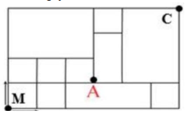
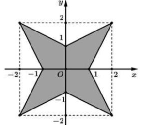
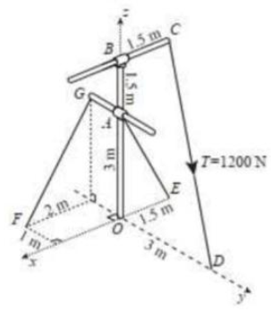

ĐỀ THI TOÁN - ĐỀ SỐ 45 HOT
Phần I: Trắc Nghiệm Nhiều Lựa Chọn
Tóm tắt kiến thức: Dãy số
Công thức tổng quát của dãy số: \( u_n = \frac{2n}{3n+2} \). Để tìm \( u_n \), thay \( n \) vào công thức.
Câu 1:
Cho dãy số \( (u_n) \) với \( u_n = \frac{2n}{3n+2} \), \( n \in \mathbb{N}^* \). Khẳng định nào sau đây đúng?
Chọn đáp án:
Lời giải:
Ta có: \( u_n = \frac{2n}{3n+2} \), \( n \in \mathbb{N}^* \).
Với \( n = 2 \): \( u_2 = \frac{2 \cdot 2}{3 \cdot 2 + 2} = \frac{4}{8} = \frac{1}{2} \).
Đáp án: B.
Tóm tắt kiến thức: Tọa độ không gian
Tọa độ điểm \( A(x; y; z) \) trong không gian \( Oxyz \). Để kiểm tra, thay tọa độ vào phương trình hoặc điều kiện.
Câu 2:
Trong không gian \( Oxyz \), điểm nào sau đây thuộc mặt phẳng \( x - y + z + 2 = 0 \)?
Chọn đáp án:
Lời giải:
Mặt phẳng: \( x - y + z + 2 = 0 \).
Kiểm tra từng điểm:
- \( A(2; -1; 2) \): \( 2 - (-1) + 2 + 2 = 7 \neq 0 \).
- \( B(-2; 1; 2) \): \( -2 - 1 + 2 + 2 = 1 \neq 0 \).
- \( C(2; 1; 2) \): \( 2 - 1 + 2 + 2 = 5 \neq 0 \).
- \( D(2; -1; -2) \): \( 2 - (-1) + (-2) + 2 = 3 - 2 + 2 = 0 \).
Đáp án: D.
Tóm tắt kiến thức: Thể tích hình chóp
Thể tích hình chóp: \( V = \frac{1}{3} \cdot S_{\text{đáy}} \cdot h \). Diện tích đáy tam giác: \( S = \frac{1}{2} \cdot a \cdot b \cdot \sin \theta \).
Câu 3:
Cho hình chóp \( S.ABC \) có đáy là tam giác \( ABC \) với diện tích \( S_{\triangle ABC} = 3 \), chiều cao \( h = 5 \). Thể tích của hình chóp \( S.ABC \) là:
Chọn đáp án:
Lời giải:
Thể tích: \( V_{S.ABC} = \frac{1}{3} \cdot S_{\triangle ABC} \cdot h \).
Với \( S_{\triangle ABC} = 3 \), \( h = 5 \): \( V = \frac{1}{3} \cdot 3 \cdot 5 = 5 \).
Đáp án: C.
Tóm tắt kiến thức: Giao điểm của mặt phẳng và trục tọa độ
Mặt phẳng \( ax + by + cz + d = 0 \) cắt trục tung tại \( (0; y; 0) \), thay \( x = 0 \), \( z = 0 \) để tìm \( y \).
Câu 5:
Trong không gian \( Oxyz \), mặt phẳng \( (\alpha): x + 2y + 3z - 6 = 0 \) cắt trục tung tại điểm có tung độ bằng:
Chọn đáp án:
Lời giải:
Mặt phẳng \( (\alpha): x + 2y + 3z - 6 = 0 \) cắt trục tung tại \( (0; a; 0) \).
Thay vào: \( 0 + 2a + 3 \cdot 0 - 6 = 0 \Leftrightarrow 2a = 6 \Leftrightarrow a = 3 \).
Đáp án: C.
Tóm tắt kiến thức: Giá trị nhỏ nhất của hàm số
Giá trị nhỏ nhất trên đoạn được xác định từ bảng biến thiên hoặc các điểm cực trị.
Câu 6:
Cho hàm số \( y = f(x) \) có bảng biến thiên như hình dưới:

Giá trị nhỏ nhất của hàm số \( y = f(x) \) trên đoạn \( [0; 6] \) bằng:
Chọn đáp án:
Lời giải:
Từ bảng biến thiên, giá trị nhỏ nhất của hàm số \( y = f(x) \) trên đoạn \( [0; 6] \) là 0.
Đáp án: A.
Tóm tắt kiến thức: Tiệm cận của hàm số
Tiệm cận ngang: \( \lim_{x \to \pm \infty} f(x) = k \). Tiệm cận đứng: \( \lim_{x \to a} f(x) = \pm \infty \).
Câu 7:
Cho hàm số \( y = f(x) \) có bảng biến thiên như hình dưới:

Tổng số đường tiệm cận đứng và tiệm cận ngang của đồ thị hàm số \( y = f(x) \) là:
Chọn đáp án:
Lời giải:
Từ bảng biến thiên:
- \( \lim_{x \to -\infty} y = 5 \), \( \lim_{x \to \infty} y = +\infty \): Có một tiệm cận ngang \( y = 5 \).
- \( \lim_{x \to -2} y = +\infty \): Có một tiệm cận đứng \( x = -2 \).
Tổng số tiệm cận: \( 1 + 1 = 2 \).
Đáp án: A.
Tóm tắt kiến thức: Bất phương trình lũy thừa
Bất phương trình \( a^{f(x)} \leq a^g \Rightarrow f(x) \leq g \) (nếu \( a > 1 \)).
Câu 8:
Tập nghiệm của bất phương trình \( 3^{2x-3} \leq \frac{1}{3} \) là:
Chọn đáp án:
Lời giải:
\( 3^{2x-3} \leq \frac{1}{3} \Leftrightarrow 3^{2x-3} \leq 3^{-1} \Leftrightarrow 2x - 3 \leq -1 \Leftrightarrow 2x \leq 2 \Leftrightarrow x \leq 1 \).
Tập nghiệm: \( (-\infty; 1] \).
Đáp án: A.
Tóm tắt kiến thức: Độ dài vectơ trong hình lập phương
Trong hình lập phương cạnh \( a \), độ dài đường chéo: \( \sqrt{a^2 + a^2 + a^2} = a\sqrt{3} \).
Câu 9:
Cho hình lập phương \( ABCD.A'B'C'D' \) có cạnh bằng \( a \). Độ dài của vectơ \( \vec{u} = \overrightarrow{A'C'} - \overrightarrow{A'A} \) bằng:
Chọn đáp án:
Lời giải:
Ta có: \( \vec{u} = \overrightarrow{A'C'} - \overrightarrow{A'A} = \overrightarrow{A'C'} + \overrightarrow{AA'} = \overrightarrow{AC'} \).
Trong hình lập phương cạnh \( a \), \( AC' \) là đường chéo: \( AC' = \sqrt{a^2 + a^2 + a^2} = a\sqrt{3} \).
Độ dài: \( |\vec{u}| = \sqrt{3}a \).
Đáp án: D.
Tóm tắt kiến thức: Tứ phân vị
Tứ phân vị thứ nhất \( Q_1 \) nằm trong khoảng chứa giá trị thứ \( \frac{n+1}{4} \) (nếu \( n \) lẻ) hoặc trung bình hai giá trị gần đó.
Câu 10:
Một vườn thú ghi lại tuổi thọ (đơn vị: năm) của 20 con hổ và thu được kết quả như sau:
| Tuổi thọ | \([14; 15)\) | \([15; 16)\) | \([16; 17)\) | \([17; 18)\) | \([18; 19)\) |
|---|---|---|---|---|---|
| Số con hổ | 1 | 3 | 8 | 6 | 2 |
Chọn đáp án:
Lời giải:
Số con hổ: \( n = 20 \). Tứ phân vị thứ nhất: \( Q_1 = \frac{x_5 + x_6}{2} \).
Sắp xếp: \( x_1 \in [14; 15) \), \( x_2, x_3, x_4 \in [15; 16) \), \( x_5, \ldots, x_{12} \in [16; 17) \).
Vì \( x_5, x_6 \in [16; 17) \), nên \( Q_1 \in [16; 17) \).
Đáp án: C.
Tóm tắt kiến thức: Thể tích khối tròn xoay
Thể tích: \( V = \pi \int_a^b [f(x)]^2 \, dx \). Tìm giao điểm với trục hoành để xác định giới hạn tích phân.
Câu 11:
Cho hình phẳng \( (H) \) giới hạn bởi đồ thị hàm số \( y = 4 - x^2 \) và trục hoành. Thể tích khối tròn xoay được tạo thành khi quay \( (H) \) xung quanh trục \( Ox \) bằng:
Chọn đáp án:
Lời giải:
Giao điểm: \( 4 - x^2 = 0 \Leftrightarrow x = \pm 2 \).
Thể tích: \( V = \pi \int_{-2}^2 (4 - x^2) \, dx \).
Tính: \( \int_{-2}^2 (4 - x^2) \, dx = \left[ 4x - \frac{x^3}{3} \right]_{-2}^2 = \left( 8 - \frac{8}{3} \right) - \left( -8 + \frac{8}{3} \right) = \frac{32}{3} \).
\( V = \pi \cdot \frac{32}{3} \cdot \frac{16}{5} = \frac{512\pi}{15} \).
Đáp án: C.
Tóm tắt kiến thức: Nguyên hàm
Nếu \( F(x) = \int [x - f(x)] \, dx \), thì \( F'(x) = x - f(x) \). Tìm \( F(x) \) từ điều kiện ban đầu.
Câu 12:
Cho hàm số \( f(x) \) liên tục trên \( \mathbb{R} \). Biết \( F(x) \) là nguyên hàm của \( f(x) \) thỏa mãn \( F(2) = 2 \) và \( F(x) = \int [x - f(x)] \, dx \), \( \forall x \in \mathbb{R} \). Giá trị của \( F(4) \) bằng:
Chọn đáp án:
Lời giải:
\( F(x) = \int x \, dx - \int f(x) \, dx = \frac{x^2}{2} + C - F(x) \).
\( \Rightarrow 2F(x) = \frac{x^2}{2} + C \).
Tại \( x = 2 \): \( 2F(2) = \frac{2^2}{2} + C \Rightarrow 2 \cdot 2 = 2 + C \Rightarrow C = 2 \).
Với \( x = 4 \): \( 2F(4) = \frac{4^2}{2} + 2 = 10 \Rightarrow F(4) = 5 \).
Đáp án: A.
Phần II: Trắc Nghiệm Đúng/Sai
Tóm tắt kiến thức: Hàm logarit và cực trị
Tập xác định: \( \ln(g(x)) \) yêu cầu \( g(x) > 0 \). Đạo hàm: \( (\ln u)' = \frac{u'}{u} \). Cực trị: \( f'(x) = 0 \).
Câu 13:
Cho hàm số \( f(x) = \ln(x^2 - 2x + 1) - x \). Xét các phát biểu sau:
Chọn đáp án cho từng phát biểu:
a)
b)
c)
d)
Lời giải:
a) Sai. Điều kiện: \( x^2 - 2x + 1 = (x-1)^2 > 0 \Leftrightarrow x \neq 1 \). Tập xác định: \( D = \mathbb{R} \setminus \{1\} \).
b) Đúng. \( f'(x) = \frac{(x^2 - 2x + 1)'}{x^2 - 2x + 1} - 1 = \frac{2x - 2}{(x-1)^2} - 1 = \frac{2}{x-1} - 1 \).
c) Đúng. \( f'(x) = 0 \Leftrightarrow \frac{2}{x-1} - 1 = 0 \Leftrightarrow x = 3 \). Chỉ có 1 nghiệm trên \( (1; +\infty) \).
d) Sai. Tại \( x = 3 \): \( f(3) = \ln 4 - 3 = 2 \ln 2 - 3 \). So với \( a \ln 2 + b \): \( a = 2 \), \( b = -3 \). \( a + b = 2 - 3 = -1 \neq 1 \).
Đáp án: a) Sai, b) Đúng, c) Đúng, d) Sai.
Tóm tắt kiến thức: Xác suất có điều kiện
Xác suất toàn phần: \( P(A) = P(B)P(A|B) + P(\bar{B})P(A|\bar{B}) \). Xác suất có điều kiện: \( P(B|A) = \frac{P(B)P(A|B)}{P(A)} \).
Câu 14:
Một nhà máy sản xuất bóng đèn có tỷ lệ bóng đạt tiêu chuẩn là 82%. Mỗi bóng đèn được kiểm tra chất lượng tự động. Bóng tốt có xác suất 92% được công nhận, bóng hỏng có xác suất 96% bị loại bỏ. Gọi \( A \): “Bóng được công nhận đạt tiêu chuẩn”, \( B \): “Sản phẩm đạt tiêu chuẩn”. Xét các phát biểu sau:
Chọn đáp án cho từng phát biểu:
a)
b)
c)
d)
Lời giải:
a) Sai. \( P(B) = 0,82 \), \( P(\bar{B}) = 1 - 0,82 = 0,18 \).
b) Sai. Bóng hỏng bị loại bỏ với xác suất 96%, nên \( P(A|\bar{B}) = 1 - 0,96 = 0,04 \).
c) Đúng. \( P(A) = P(B)P(A|B) + P(\bar{B})P(A|\bar{B}) = 0,82 \cdot 0,92 + 0,18 \cdot 0,04 = 0,7616 = 76,16\% \).
d) Sai. \( P(B|A) = \frac{P(B)P(A|B)}{P(A)} = \frac{0,82 \cdot 0,92}{0,7616} \approx 0,9905 = 99,05\% \).
Đáp án: a) Sai, b) Sai, c) Đúng, d) Sai.
Tóm tắt kiến thức: Hình học không gian và chuyển động
Khoảng cách: \( \sqrt{(x_2 - x_1)^2 + (y_2 - y_1)^2 + (z_2 - z_1)^2} \). Phương trình chính tắc đường thẳng: \( \frac{x-x_0}{a} = \frac{y-y_0}{b} = \frac{z-z_0}{c} \).
Câu 15:
Xét hai chiếc khinh khí cầu bay lên từ cùng một điểm. Lúc 9h sáng, chiếc thứ nhất ở vị trí \( A \) cách điểm xuất phát 2 km về phía nam, 1 km về phía đông, cách mặt đất 0,5 km. Chiếc thứ hai ở vị trí \( B \) cách điểm xuất phát 1 km về phía bắc, 1,5 km về phía tây, cách mặt đất 0,8 km. Chọn hệ tọa độ \( Oxyz \) với gốc \( O \) tại điểm xuất phát, mặt phẳng \( (Oxy) \) là mặt đất, trục \( Ox \) hướng nam, \( Oy \) hướng đông, \( Oz \) hướng lên trời (đơn vị: km). Xét các phát biểu sau:
Chọn đáp án cho từng phát biểu:
a)
b)
c)
d)
Lời giải:
a) Đúng. \( A \): 2 km nam (\( x = 2 \)), 1 km đông (\( y = 1 \)), 0,5 km cao (\( z = 0,5 \)) \(\Rightarrow A(2; 1; 0,5) \).
b) Sai. \( B \): 1 km bắc (\( x = -1 \)), 1,5 km tây (\( y = -1,5 \)), 0,8 km cao (\( z = 0,8 \)) \(\Rightarrow B(-1; -1,5; 0,8) \).
\( \overrightarrow{AB} = (-3; -2,5; 0,3) \). Phương trình: \( \frac{x-2}{-3} = \frac{y-1}{-2,5} = \frac{z-0,5}{0,3} \), không phải \( \frac{x-2}{30} = \frac{y-1}{25} = \frac{z-0,5}{3} \).
c) Đúng. \( AB = \sqrt{(-3)^2 + (-2,5)^2 + 0,3^2} \approx 3,92 \) km.
d) Sai. Từ 9h đến 9h10 (1/6 giờ):
- Khinh khí cầu 1: \( x_M = 2 + 50 \cdot \frac{1}{6} = \frac{31}{3} \), \( y_M = 1 \), \( z_M = 0,5 \). \(\Rightarrow M\left(\frac{31}{3}; 1; 0,5\right) \).
- Khinh khí cầu 2: \( \overrightarrow{BN} = k(2; 2; 1) \), \( BN = 60 \cdot \frac{1}{6} = 10 \Rightarrow k \sqrt{9} = 10 \Rightarrow k = \frac{10}{3} \).
\( \overrightarrow{BN} = \left(\frac{20}{3}; \frac{20}{3}; \frac{10}{3}\right) \). \( N\left(\frac{17}{3}; \frac{31}{6}; \frac{62}{15}\right) \).
\( MN = \sqrt{\left(\frac{17}{3} - \frac{31}{3}\right)^2 + \left(\frac{31}{6} - 1\right)^2 + \left(\frac{62}{15} - 0,5\right)^2} \approx 7,23 \neq 4,66 \).
Đáp án: a) Đúng, b) Sai, c) Đúng, d) Sai.
Tóm tắt kiến thức: Tích phân và hiệu suất
Tổng sản phẩm: \( \int_0^t Q'(t) \, dt \). Cực đại của hàm hiệu suất: \( Q'(t) \) đạt max khi \( Q''(t) = 0 \).
Câu 16:
Hình vẽ mô tả hiệu suất làm việc của hai công nhân trong 6 giờ. Công nhân \( A \) có hiệu suất \( Q_1'(t) = -2t^2 + 4t + 58 \) sản phẩm/giờ, công nhân \( B \) có hiệu suất \( Q_2'(t) = 53 + at \) sản phẩm/giờ (\( a \in \mathbb{R} \)). Biết \( Q_1(t) \), \( Q_2(t) \) là số sản phẩm làm được sau \( t \) giờ. Xét các phát biểu sau:
Chọn đáp án cho từng phát biểu:
a)
b)
c)
d)
Lời giải:
a) Đúng. \( Q_1'(t) = -2t^2 + 4t + 58 = -2(t-1)^2 + 60 \leq 60 \), đạt max tại \( t = 1 \).
b) Sai. Diện tích tô đậm: \( \int_0^t |Q_1'(t) - Q_2'(t)| \, dt \), không phải tổng sản phẩm \( \int_0^t (Q_1'(t) + Q_2'(t)) \, dt \).
c) Đúng. Tại \( t = 5 \): \( Q_1'(5) = -2 \cdot 5^2 + 4 \cdot 5 + 58 = 28 \), \( Q_2'(5) = 53 + 5a \).
\( 28 = 53 + 5a \Rightarrow a = -5 \). \( Q_2'(t) = 53 - 5t \).
\( \int_0^5 Q_1'(t) \, dt - \int_0^5 Q_2'(t) \, dt \approx 54 \).
d) Sai. Tổng sản phẩm: \( \int_0^6 Q_1'(t) \, dt + \int_0^6 Q_2'(t) \, dt = 276 + 228 = 504 \neq 502 \).
Đáp án: a) Đúng, b) Sai, c) Đúng, d) Sai.
Phần III: Trắc Nghiệm Trả Lời Ngắn
Tóm tắt kiến thức: Góc nhị diện trong hình chóp đều
Góc nhị diện \( [S, BC, A] \) là góc giữa mặt phẳng \( (SHA) \) và \( (ABC) \), tính \( \tan \alpha \) bằng cách dùng tâm và chiều cao.
Câu 17:
Cho hình chóp tam giác đều \( S.ABC \) có \( AB = 2 \), \( SA = 3 \). Gọi \( \alpha \) là số đo của góc nhị diện \( [S, BC, A] \). Giá trị \( \tan \alpha \) bằng bao nhiêu? (làm tròn đến hàng phần mười).
Nhập đáp án:
Lời giải:
Kẻ \( AH \perp BC \), \( O \) là tâm tam giác \( ABC \). Vì chóp đều, \( SO \perp (ABC) \Rightarrow SO \perp BC \).
\( BC \perp (SHA) \Rightarrow [S, BC, A] = \angle SHO \).
Trong \( \triangle ABC \): \( AH = \sqrt{3} \), \( OH = \frac{\sqrt{3}}{3} \), \( AO = \frac{2\sqrt{3}}{3} \).
\( SO = \sqrt{SA^2 - AO^2} = \sqrt{3^2 - \left(\frac{2\sqrt{3}}{3}\right)^2} = \frac{\sqrt{69}}{3} \).
\( \tan \alpha = \frac{SO}{OH} = \frac{\frac{\sqrt{69}}{3}}{\frac{\sqrt{3}}{3}} = \sqrt{23} \approx 4,8 \).
Đáp án: 4,8.
Tóm tắt kiến thức: Xác suất có điều kiện
Xác suất có điều kiện: \( P(A|B) = \frac{P(A \cap B)}{P(B)} \). Sử dụng tổ hợp để tính xác suất chọn bóng hỏng.
Câu 18:
Mỗi hộp chứa 12 bóng đèn cùng màu. Số hộp màu xanh gấp 9 lần số hộp màu vàng. Mỗi hộp xanh có 3 bóng hỏng, mỗi hộp vàng có 2 bóng hỏng. Tính xác suất để lấy ra hai bóng đèn màu xanh ở cùng một hộp, biết cả hai bóng đều hỏng (làm tròn đến hàng phần trăm).
Nhập đáp án:
Lời giải:
Gọi \( A_1 \): Lấy hộp vàng, \( A_2 \): Lấy hộp xanh, \( B \): Lấy được 2 bóng hỏng.
\( P(A_1) = \frac{1}{1+9} = \frac{1}{10} \), \( P(A_2) = \frac{9}{10} \).
\( P(B|A_1) = \frac{C_2^2}{C_{12}^2} = \frac{1}{66} \), \( P(B|A_2) = \frac{C_3^2}{C_{12}^2} = \frac{3}{66} \).
\( P(B) = P(A_1)P(B|A_1) + P(A_2)P(B|A_2) = \frac{1}{10} \cdot \frac{1}{66} + \frac{9}{10} \cdot \frac{3}{66} = \frac{7}{165} \).
\( P(A_2|B) = \frac{P(A_2)P(B|A_2)}{P(B)} = \frac{\frac{9}{10} \cdot \frac{3}{66}}{\frac{7}{165}} = \frac{27}{28} \approx 0,96 \).
Đáp án: 0,96.
Tóm tắt kiến thức: Tổ hợp đường đi
Số cách đi từ \( M \) đến \( C \) trên lưới ô vuông, chỉ đi lên hoặc sang phải, là \( C_{m+n}^m \), trừ các đường đi qua điểm cấm.
Câu 19:
Trên đường Mạnh đi từ nhà \( M \) đến công ty \( C \), có điểm \( A \) đang sửa chữa nên không thể đi qua. Biết các đường đều một chiều, Mạnh chỉ được phép đi lên hoặc sang phải. Số cách Mạnh đến công ty là bao nhiêu?

Nhập đáp án:
Lời giải:
Số cách đi từ \( M \) đến \( C \) không qua \( A \): 15 cách (theo hình minh họa).
Đáp án: 15.
Tóm tắt kiến thức: Thể tích khối tròn xoay
Thể tích: \( V = \pi \int_a^b [f(x)]^2 \, dx \). Xác định phương trình đường thẳng để tính tích phân.
Câu 20:
Bên trong hình vuông cạnh 4, dựng hình sao bốn cánh đều như hình vẽ. Tính thể tích \( V \) của khối tròn xoay sinh ra khi quay hình sao quanh trục \( Ox \) (làm tròn đến hàng phần mười).

Nhập đáp án:
Lời giải:
Thể tích: \( V = 2 \left( \pi \int_0^1 \left( \frac{1}{2}x + 1 \right)^2 \, dx - \pi \int_1^2 (2x - 2)^2 \, dx \right) \).
Tính: \( V = 2 \left( \pi \cdot \frac{7}{6} - \pi \cdot \frac{4}{3} \right) = \frac{20}{3} \pi \approx 20,9 \).
Đáp án: 20,9.
Tóm tắt kiến thức: Vectơ lực trong không gian
Hợp lực: \( \vec{T} = \sum \vec{T_i} \). Độ lớn: \( |\vec{T}| = \sqrt{T_x^2 + T_y^2 + T_z^2} \).
Câu 21:
Một ống phun nước có hình dạng như hình vẽ. Để giữ ống cân bằng, kỹ sư sử dụng ba đoạn thép nối các điểm \( C, A, G \) với mặt đất. Các đoạn thép \( CD, GF, AE \) có lực căng lần lượt 1200 N, 800 N, 600 N. Trong hệ tọa độ \( Oxyz \), gốc tại chân ống, trục \( Oz \) hướng lên trời, mặt đất là \( (Oxy) \), các thông số như hình vẽ (đơn vị: mét). Độ lớn vectơ hợp lực của ba sợi thép tác động lên ống là bao nhiêu Newton (làm tròn đến hàng đơn vị).

Nhập đáp án:
Lời giải:
Hợp lực: \( \vec{T} = \frac{1200}{1,5\sqrt{14}}(1,5; 3; -4,5) + \frac{800}{\sqrt{13}}(2; 0; -3) + \frac{600}{1,5\sqrt{5}}(-1,5; 0; -3) \).
\( \vec{T} \approx (496,145; 641,427; -2164,437) \).
\( |\vec{T}| = \sqrt{496,145^2 + 641,427^2 + (-2164,437)^2} \approx 2311 \).
Đáp án: 2311.
Tóm tắt kiến thức: Hình học phẳng và lượng giác
Khoảng cách ngắn nhất đến đường thẳng: Tính độ dài đoạn vuông góc khi tiếp tuyến song song với đường cho trước.
Câu 22:
Hình vẽ mô tả một con thuyền kéo một người trượt ván bằng dây. Tính khoảng cách ngắn nhất từ người đến bờ biển khi tiếp tuyến tại vị trí người song song với đường thẳng \( x + 2y + 1 = 0 \) (làm tròn đến hàng phần trăm).

Nhập đáp án:
Lời giải:
Góc \( \angle PM_0Q = \angle FED \). Điểm \( E(-1; 0) \), \( D\left(0; -\frac{1}{2}\right) \).
\( \tan \angle FED = \frac{OD}{OE} = \frac{\frac{1}{2}}{1} = 0,5 \Rightarrow \angle FED \approx 26,565^\circ \).
\( QM_0 = PM_0 \cdot \cos 26,565^\circ = 9 \cdot \cos 26,565^\circ \approx 8,05 \).
Đáp án: 8,05.